来源：https://ry5hwpuf7b.feishu.cn/docx/WbFVdvGkAoo38ZxDumwclWEynRg
《瞬息全宇宙终极教程，手把手教你做出百万点赞视频》
大家好，我是吴东子，用奶奶都能听懂的方式分享可以落地实操的干货
我的所有资料都在公众号「吴东子AI」
最近一种叫“瞬息全宇宙”的视频火了，抖音一期视频百万赞，各个博主视频都在带瞬息全宇宙这个标签，于是就有很多朋友催我出教程了，在琢磨了几天之后，终于整出来了
教程包含了插件的安装，界面的讲解，基本看完之后是能做出来和爆款一样的效果的
如果你想定制化操作，也有进阶的知识点让你玩出花样
另外，模型和预设也给大家准备好了，放在文章的末尾，希望能帮助到大家
严禁抄袭搬运，势必追诉到底！
最近这段时间，一种叫瞬息全宇宙的视频火了
抖音一期视频百万赞，各个博主视频都在带瞬息全宇宙这个标签
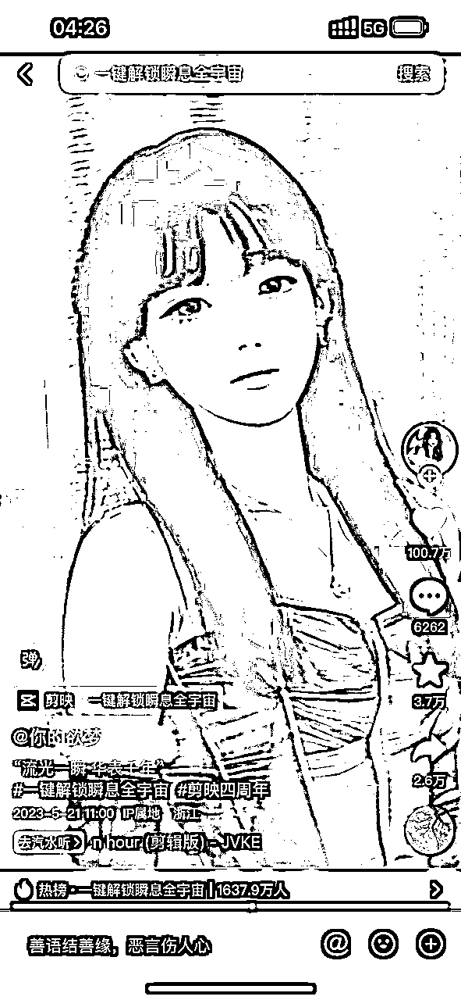
瞬息全宇宙分两种：
一种是【穿越之旅】，另一种是【平行宇宙】
“穿越之旅”就是这种画面不断变化，变成新场景，看起来像一个穿越旅途一样的视频
“平行宇宙”就是固定着原来的照片轮廓，变成不一样的风格的视频
就像是一个人在平行宇宙，平行时空的形态
制作穿越之旅，用到的是Stable Diffusion里面的deforum插件
制作平行宇宙，用到的则是一个叫runway的网站里的功能
两种视频都叫“瞬息全宇宙”，但做法是完全不同的
于是你会发现网络上很多文章，其实都没搞懂两者的区别就教别人做了，甚至很多是教大家用做“穿越之旅”的方式去做“平行宇宙”的效果，结果最后观众其实做不出自己心中想要的效果
所以希望这篇文章能带给大家更准确一点的认识，如果我有说错的地方也欢迎大家指正
这篇文章主要是跟大家分享“穿越之旅”的制作方法
“平行宇宙”的制作方法可以看这篇文章
穿越之旅用到的是Stable Diffusion（简称SD）里面的deforum插件
这个deforum插件的使用方法跟我们用SD生成照片其实是差不多的
如果还没安装SD或者不会用SD的朋友们，可以看我之前写的这篇文章
想要快速生成一个视频其实只有两步：
1.安装插件
2.写提示词
其他所有的设置都只是为了让这个视频更加的有趣，比如：
1.增加视频时长
2.制作视频运镜
3.定制开头
4.做网上的爆款视频
5.可以照抄的一些参数设置
接下来我就跟大家分享每一个部分的详细操作！
先安装Stable Diffusion！！
接下来我们就开始安装插件啦！
1.打开SD，在状态栏里面点击“扩展”
2.点击“可下载”
3.点击“加载扩展列表”
4.在搜索框里面输入“Deforum”
5.看到“Deforum”，点击右边的“安装”
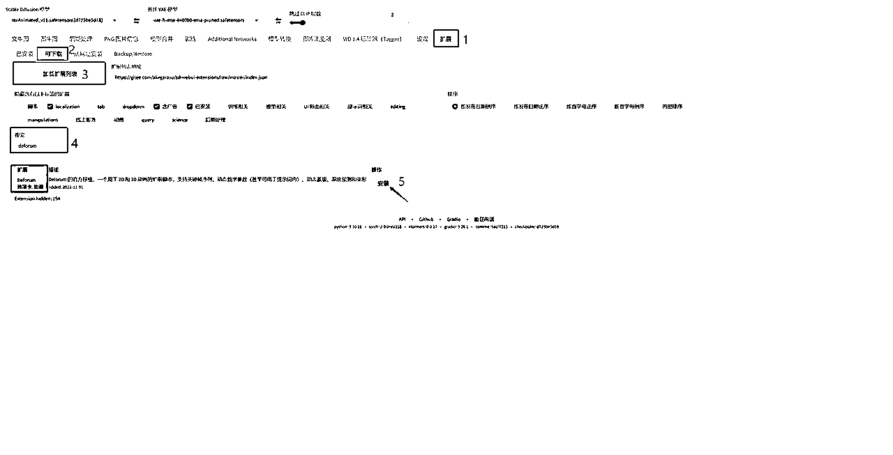
安装完了之后，关掉SD
下载网盘里面的《1.deforum模型》
复制里面的两个文件到SD文件夹，放到“models”里面的"Deforum"文件夹
（添加这两个文件是为了减少后续使用的时候出现报错）
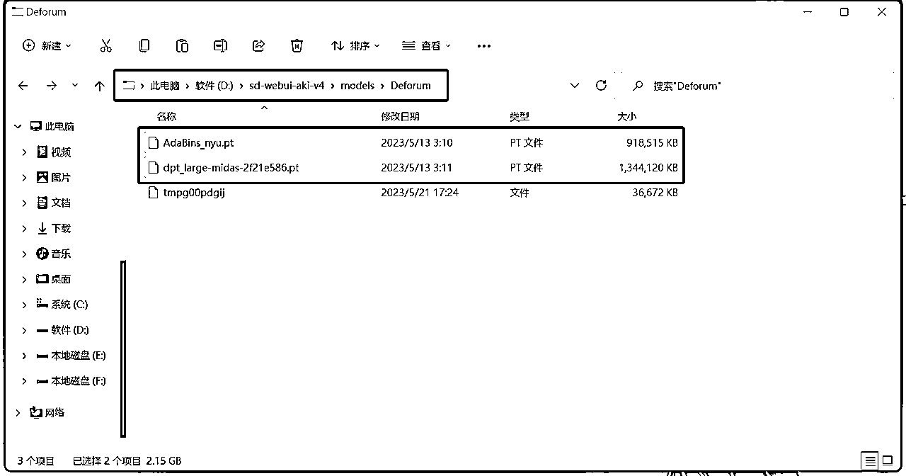
这时候再重新打开SD（重新启动web ui），我们的状态栏里面就多了一个“Deforum”的界面
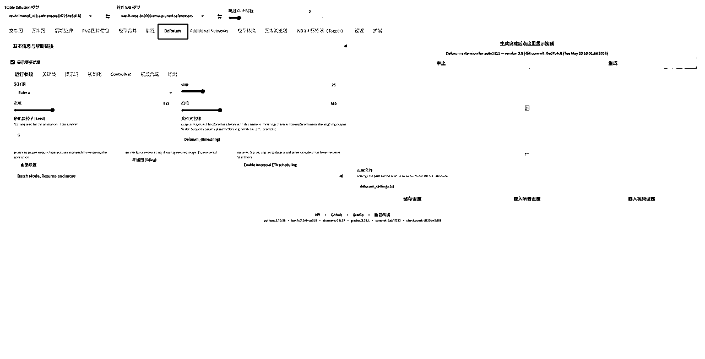
看到这个界面我们的插件就安装好啦！
如果重启之后还是没有Deforum的界面，那是因为SD和deforum的版本不适配
有两种解决办法，选一个就行：
1.升级SD版本
找到“版本管理”，切换SD版本
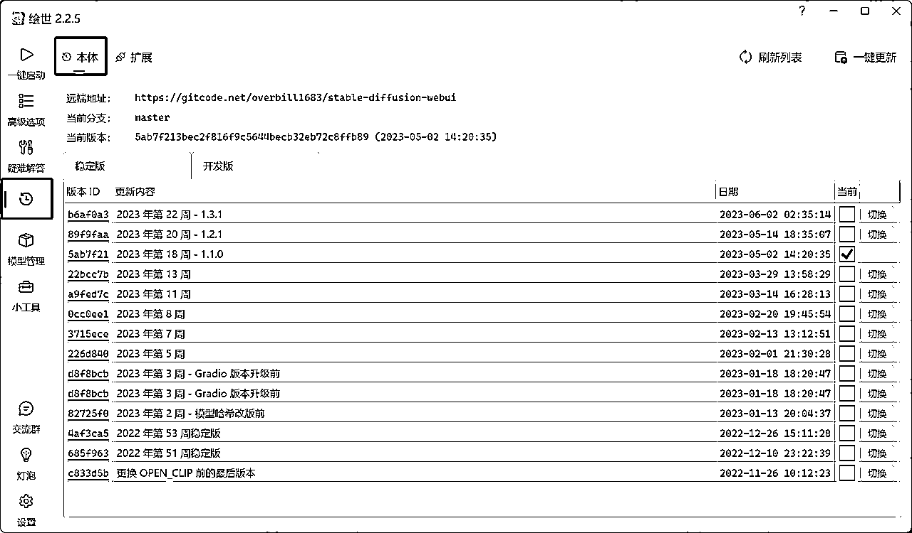
2.降低deforum版本
在“版本管理”——“扩展”——找到deforum，切换版本
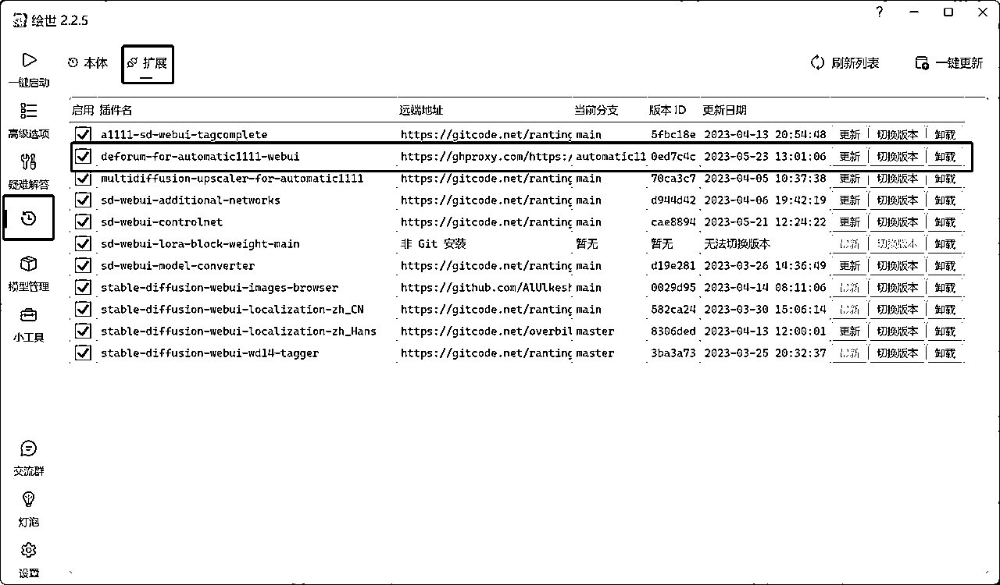
不管是做图还是做视频，最重要的就是提示词
只有通过提示词告诉SD我们脑海里的想法，才能生成出来想要的视频
写提示词可以分为以下几步：
1.选大模型
2.写提示词
3.写正负向提示词
和做图一样，做视频之前要先选择我们视频的画风，是二次元、真人3D还是水墨画
而在SD里面，大模型就控制着我们照片的画风
在左上角选择切换模型
在我自己试验下来发现有些大模型出来的视频效果是不太好的
目前来说，照片里的这个模型做这种特效视频出来的效果是最好的
（模型已经放在网盘啦！）
模型如果不会存放的话得回头看这篇文章补一下SD的知识噢
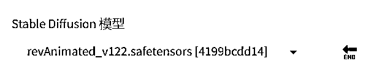
我们平时用SD做图的时候，提示词写的都只是在描述一张照片的
而做视频就是需要把几张图的提示词拼到一起
我们打开deforum的提示词界面
里面已经有系统默认输入的一大段提示词
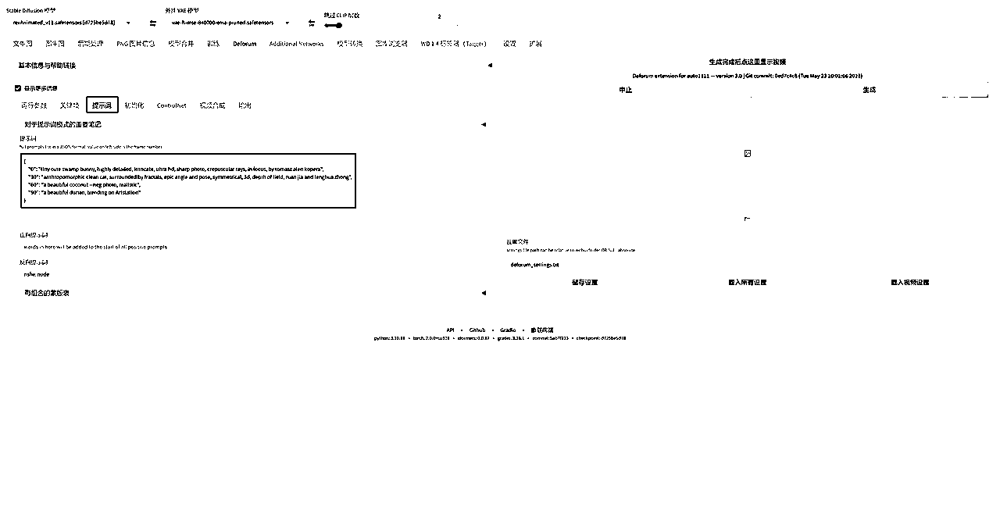
翻译成中文是这样的：
{
“0”: “小巧可爱的沼泽兔，高度细致，复杂，超高清，清晰的照片，黄昏的光线，聚焦，作者 Tomasz Alen Kopera”
“30”: “拟人洁净的猫，被分形所包围，史诗的角度和姿势，对称，3D，景深，阮家和风华中”,
“60”: “一个漂亮的椰子——阴性照片，真实”
“90”: “一颗漂亮的榴莲，在艺术站上走红”
}
我们可以看到一行就是一张照片的提示词
把四张照片的提示词放到一起
出来的视频就是从一张照片演变成另一张照片的过程
像上面四行提示词出来的视频就是一只兔子慢慢变成一只猫，再变成了一个椰子，最后变成了榴莲
接下来我们重新写提示词，生成一条新的视频
最简单的，我想视频开头是一束花，然后变成一个漂亮的女孩，再变成一只猫，最后变成一个可爱的男孩
那这四张照片对应的提示词就是：
a bunch of flowers
a beautiful girl
a cat
a lovely boy
把提示词填进去就是这样的👇
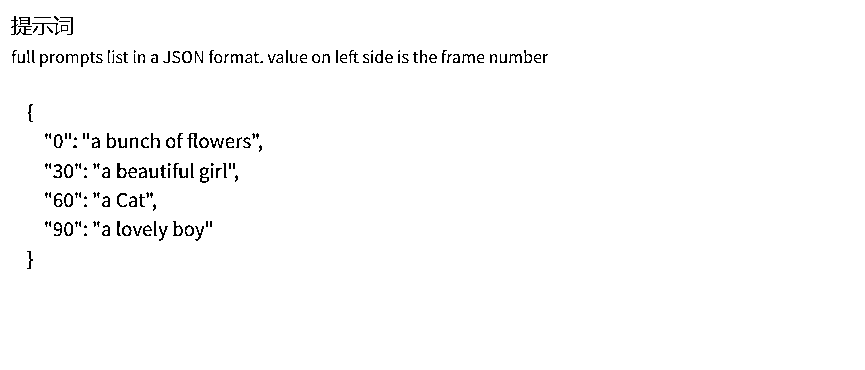
这里一定一定要注意格式！！！
1.所有的提示词都在{ }里面
2.前面的数字代表的是照片的帧数（下一节会讲）
3.每一行的提示词都要在“ ”里面
4.每一行最后要有一个逗号（最后一行不用）
5.所有符号（双引号、冒号、逗号）都是英文状态下输入的（如果最后生成视频出现报错，很有可能是符号出错）
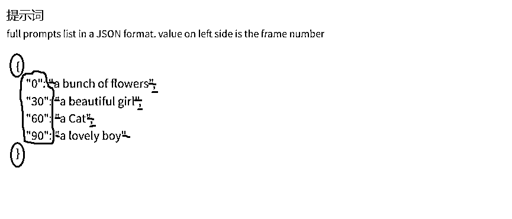
输入完提示词，就可以点击右边的“生成”生成视频
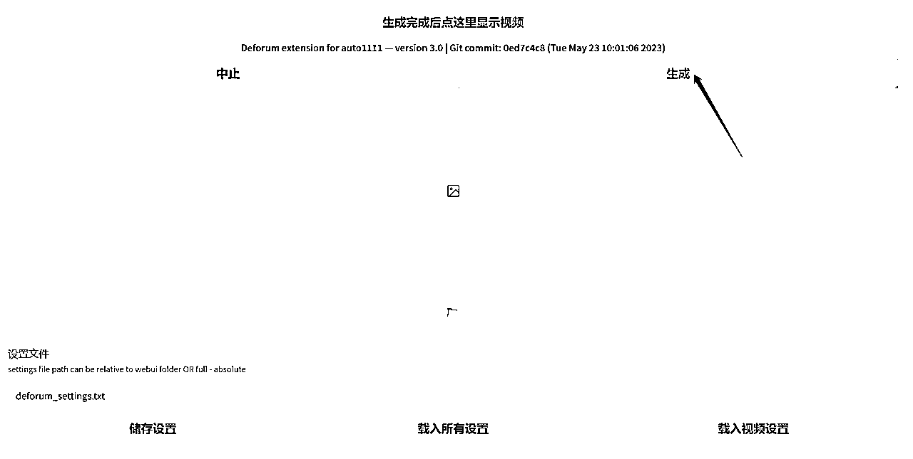
生成出来之后，点击上面的地方就可以看生成好的视频
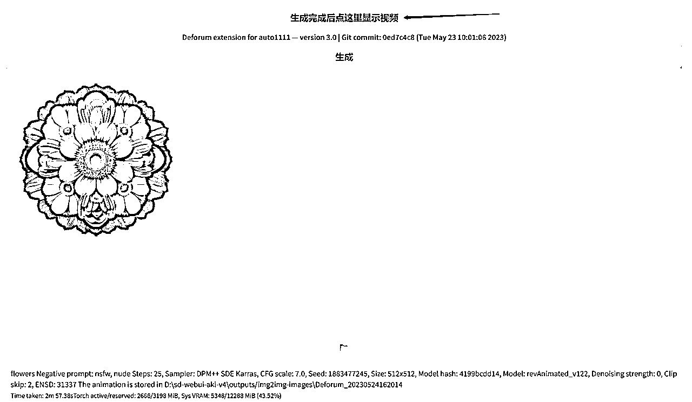
点击视频右下角的三个点可以下载视频
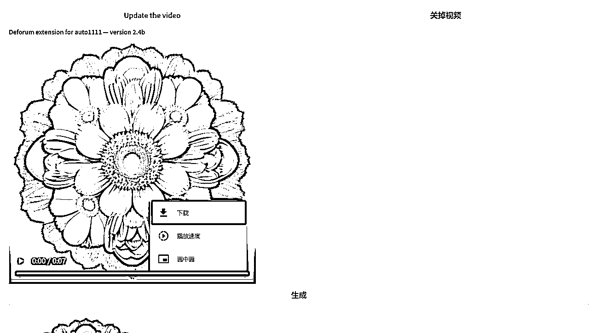
这样我们的第一条视频就做好啦！
现在出来的视频效果还比较差
因为我们的提示词输入的太过于简单了，出来的画面也就比较简单
而且要配合上视频运镜才会出来好的效果（后面会讲）
那怎么样才能写好提示词呢？
其实写提示词也是有模板的：
主体+主体的细节+周围环境+画风
比如我想要生成一个女孩
那我的提示词就可以写成：
主体：一个女孩
细节：长发，穿着白色裙子，站在马路上
环境：背景是城市建筑、白天
画风：现实风格
变成英语就是：a girl, long hair, wearing a white skirt, standing on the road, the background is urban architecture, daytime, realistic style
每一行的提示词都可以按照这个模板去写
提示词描述的越准确，出来的视频才会越接近我们脑海里的画面！
为了让视频出来的质量更高
我们还可以输入一些正向提示词和反向提示词
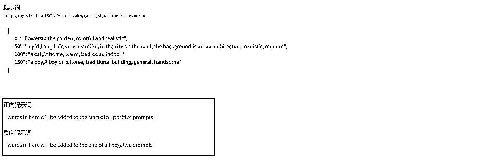
正向提示词就是你希望视频会出现的东西，比如最高质量、高清画质之类的词语
反向提示词就是你不希望照片会出现的东西，比如低质量，多余的手或脚之类的词语
这里的正反向提示词是作用到整个视频的
所以不要写某一张照片里面的细节，不然整条视频都会出现这个东西
这里我把提示词放出来，大家直接复制上去就可以
正向提示词：
Highest quality, masterpieces, extreme detail, 8K, HD qualit
反向提示词：
nsfw, nude,(worst quality:2), (low quality:2), (normal quality:2), lowres, ((monochrome)), ((grayscale)), bad anatomy,DeepNegative, skin spots, acnes, skin blemishes,(fat:1.2),facing away, looking away,tilted head, lowres,bad anatomy,bad hands, missing fingers,extra digit, fewer digits,bad feet,poorly drawn hands,poorly drawn face,mutation,deformed,extra fingers,extra limbs,extra arms,extra legs,malformed limbs,fused fingers,too many fingers,long neck,cross-eyed,mutated hands,polar lowres,bad body,bad proportions,gross proportions,missing arms,missing legs,extra digit, extra arms, extra leg, extra foot,teethcroppe,signature, watermark, username,blurry,cropped,jpeg artifacts,text,error
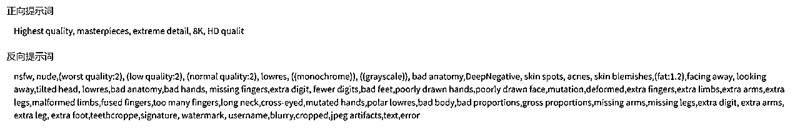
我们已经可以生成出来一条视频了
但是现在我想让视频时长更长一点，生成更多的照片，该怎么办呢？
我们可以通过调整deforum里面的两个参数来改变视频的时长
打开deforum的关键帧页面
下面的“最大帧数”就可以控制我们的视频长度
这里的一帧我们可以理解为一张照片
200帧就是生成200张照片
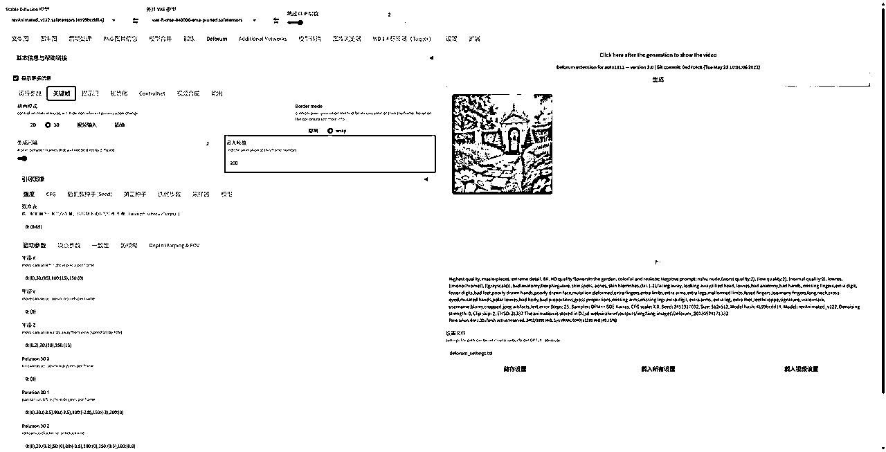
再打开“输出”页面
这里的“FPS”控制的就是视频的速度
把参数调到15，就代表着1秒钟生成15帧（也就是1秒钟生成15张照片）
参数调到30，就代表着1秒钟生成30张照片
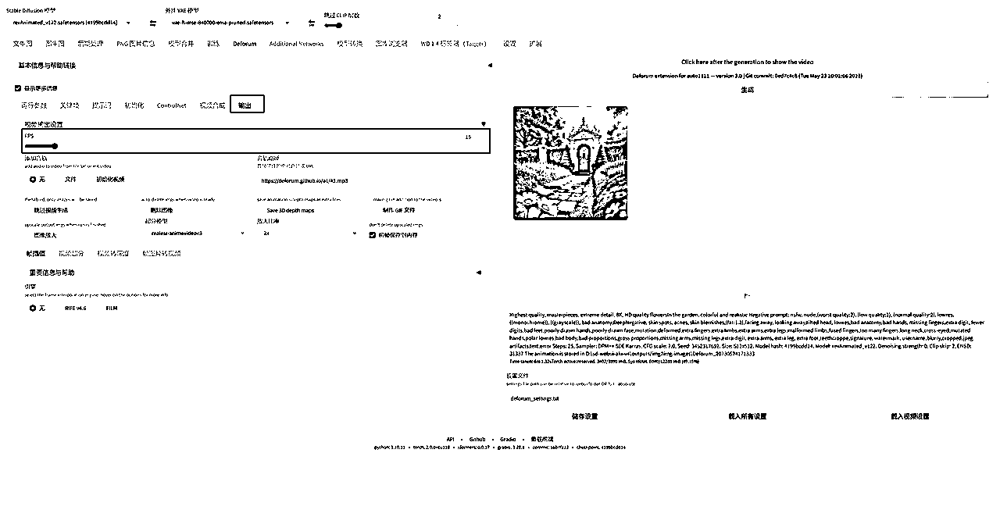
假如我们现在的最大帧数设置成200，FPS的参数设置为15（也就是总共200张照片，1秒播放15张照片）
那我们的视频时长就是：200÷15=13.33秒
那也就是说，我们可以通过设置最大帧数和FPS来调整视频的时长
但正常情况下，FPS调到15就可以了，我们只要设置最大参数就行
比如我想要一条30秒左右的视频
30×15=450
那我的最大帧数就要设置成450帧
了解了这个帧数之后，我们再看回提示词前面的数字
这里的数字代表的就是帧数
“0”代表的就是一开始的照片：一束花
“30”代表的是第30帧照片：一个漂亮的女孩
所以第0~30帧就是一束花变成一个漂亮女孩的过程
30~60帧就是一个漂亮女孩变成一只猫的过程
60~90就是一只猫变成一个可爱的男孩的过程
这里的数值是可以根据我们设置的最大帧数去调整的，或者生成更多张照片
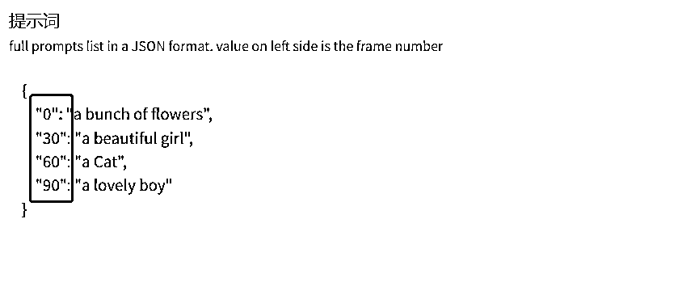
前面我们生成出来的照片都是固定在一个视角的
在deforum里面，我们可以通过设置参数
让视频跟着我们设置的参数动起来，让视频变得更加有趣
打开deforum的关键帧界面
先把动画模式设置成“3D”，右边的参数设置成“wrap”
往下看，运动参数里面的所有设置都是为了让我们的照片动起来的
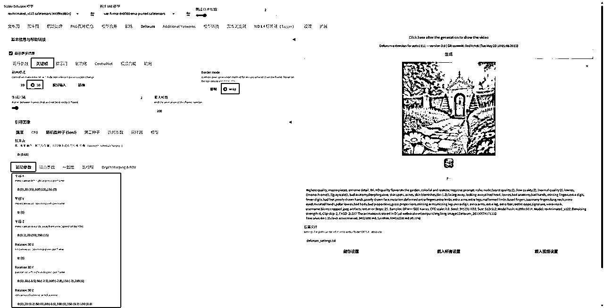
接下来我们来看看这些参数到底怎么控制视频运动
我们以“平移X”为例子，看看视频镜头是怎么运动的
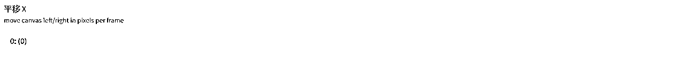
默认状态下的参数是：0:(0)
前面的0代表的是第0帧，括号的0代表的是不运动
当括号里面的数值大于0的时候，视频镜头向右移动
当括号里面的数值小于0的时候，视频镜头向左移动
比如现在我想让视频镜头前半段向右移动，后半段向左移动
那就是从第0帧开始，速度为2向右移动
一直向右移动直到第60帧，变成速度为2的向左移动
写出来就变成：0: (2),60:(-2)
要注意的是：中间用逗号隔开
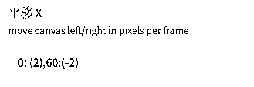
那如果说现在镜头从第0帧开始一直向右运动，运动到一半我想让镜头定住不动了
写出来就变成：0: (2),60:(0)
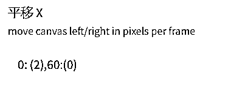
下面的其他参数格式都是一样的
不一样的就是镜头运动的方向不一样
大家可以看下面的表格，当参数大于0或者小于0时，镜头是怎么运动的
| 平移 Y | 平移 Z | Rotation 3D X | Rotation 3D Y | Rotation 3D Z | |
|---|---|---|---|---|---|
| 大于0 | 向上 | 放大 | 从远到近旋转 | 从右到左的旋转 | 逆时针旋转 |
| 小于0 | 向下 | 缩小 | 从近到远旋转 | 从左到右的旋转 | 顺时针旋转 |
具体的运动方式大家可以自己去试试看
这里就不具体演示了
上面说到的全部参数都是可以混着调整的
在网盘里面也给大家准备好了预设
直接套用也可以
还有一种更有趣的玩法就是给视频加一张开头的照片
这样后续的视频就会根据我们给的这张照片继续演变成下一张照片
具体的步骤：
1.导入照片
2.写提示词
3.设置镜头运动
4.生成视频
就以这张大家都熟知的照片作为开头第一帧的照片
看看最后究竟能生成出什么样的视频
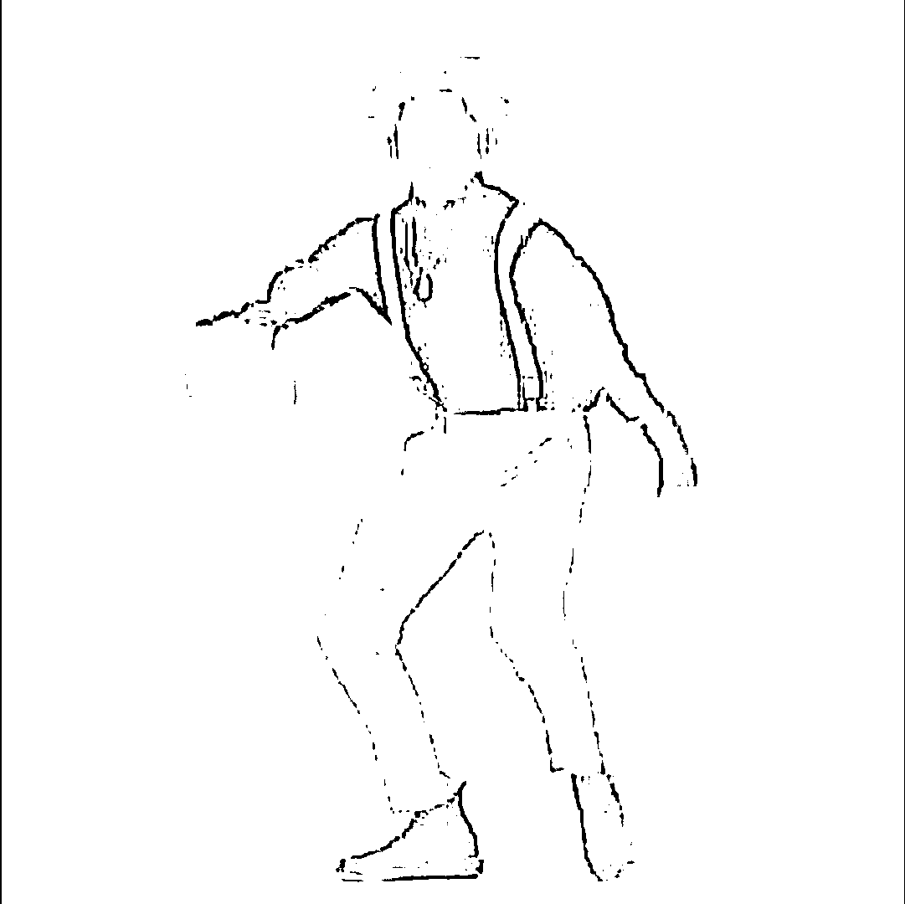
首先要把这张照片先导入到deforum里面
鼠标右键点击照片，点击“复制文件地址
打开deforum的“初始化”界面
勾选“使用初始化”
然后把刚刚复制的文件地址粘贴到“初始化图像”的文本框里面
然后把前后的两个双引号删掉，不然会出现报错！！！
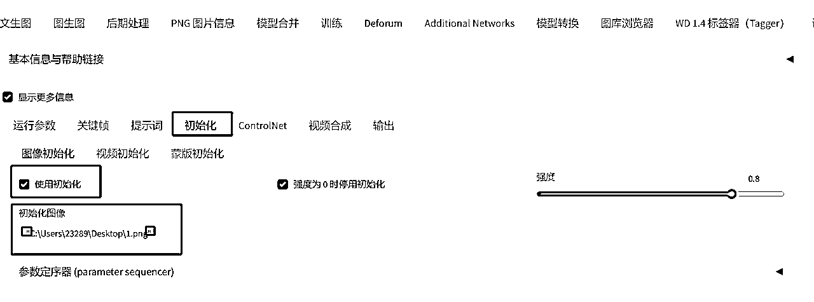
这样的我们的照片就导入进来了
接下来就要想一下我们要生成一条什么样的视频
把它变成提示词输入进去
这里需要注意的就是第0帧的提示词
因为我们已经给了一张初始照片，就不用再去描述一个画面了
所以这里可以填上一些照片质量的提示词（比如大师杰作，高清，极致的细节，现实风格等等）
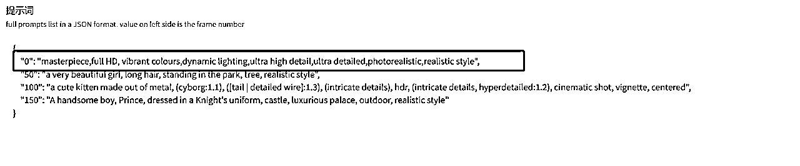
然后直接把前面给正负提示词复制上去
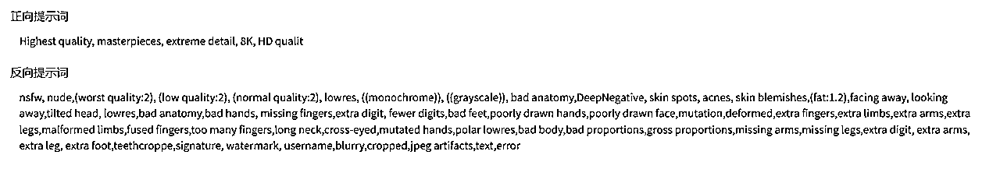
这样我们提示词就写完了
接下来为了让视频更加有趣，稍微设置一下镜头运动
大家一定要注意：运动参数里面的冒号、括号、逗号都要是英文状态下输入的!!
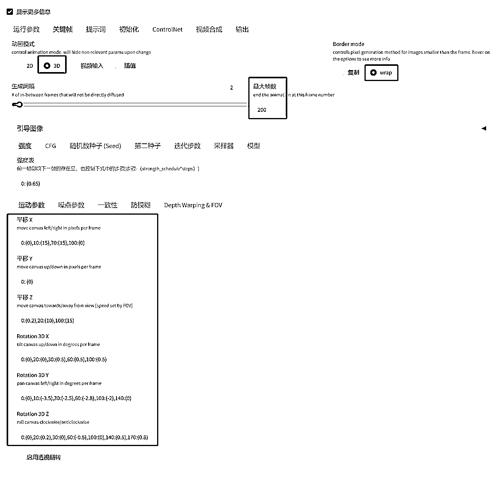
全部参数设置好了之后,点击“生成”，就可以生成视频啦
我们平时在网上看到的视频还会有一段开头
然后再卡点变成AI生成的视频
这个又要怎么做呢？
在剪映导入一段有趣的视频
可以是自己拍的，也可以是网络上的视频
点击选中视频，找到想要截取的那一张照片
然后点击工具栏里面的“帧定格”
这时候视频后面就会多出一段定住的视频
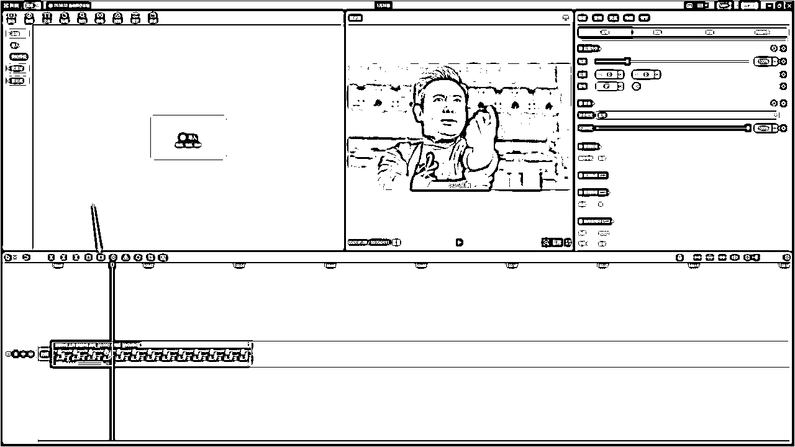
选中刚刚多出来的那一段定格视频
点击播放器的右上角的三条杠
点击“导出静帧照片”
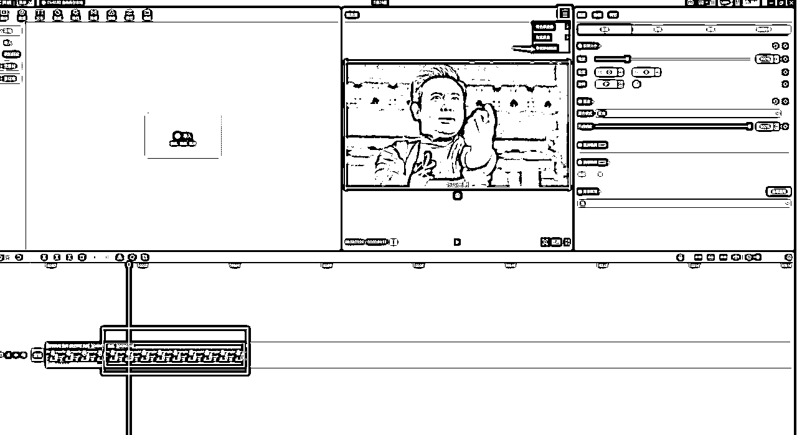
这时候就会导出来一张照片
接下来就按照文章第七部分去生成出来一段视频
等视频生成之后，把这个视频导入到剪映
把刚刚定格的那段视频和后面那段删掉，只保留开头
把开头和AI生成的视频拼到一起
加上BGM
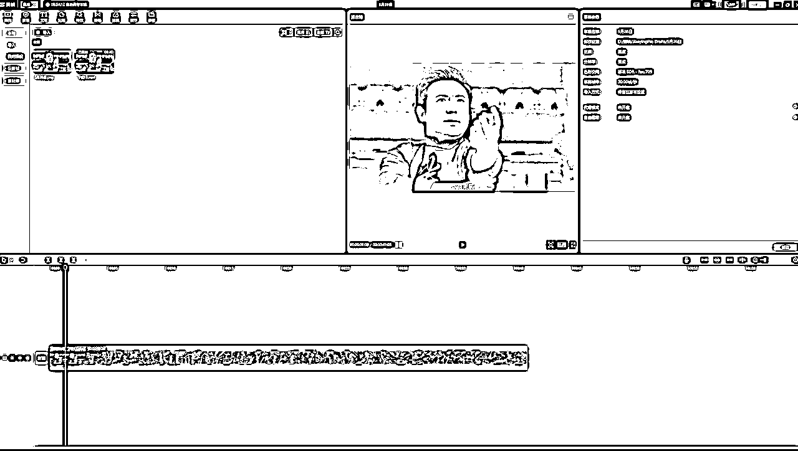
点击右上角的“导出”保存视频
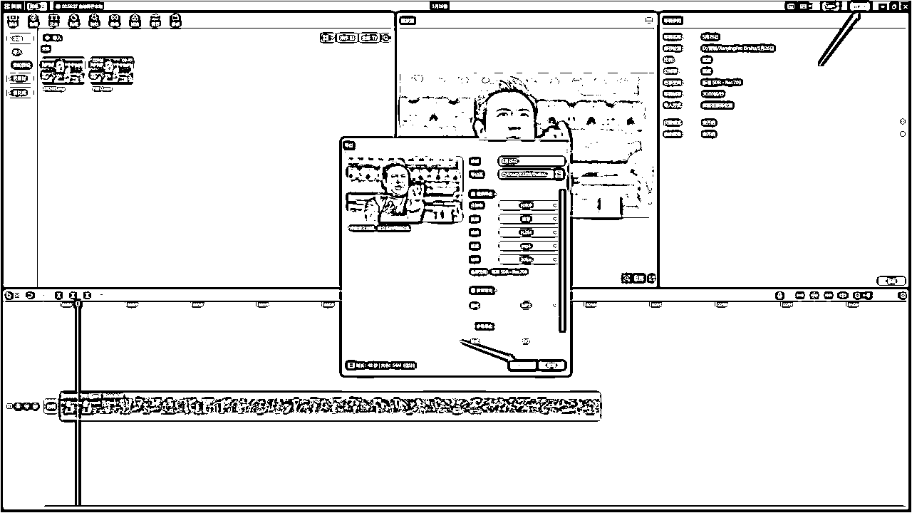
一起来看看最后的成片吧！！
大家可以看到deforum里面还有很多参数是可以调整的
大部分和我们使用Stable Diffusion是一样的（如果想详细了解的可以去看SD的那篇文章）
我们直接照抄就行
首先是采样器，比较常用的就是图片框起来那个
出图质量比较高，而且速度也比较快
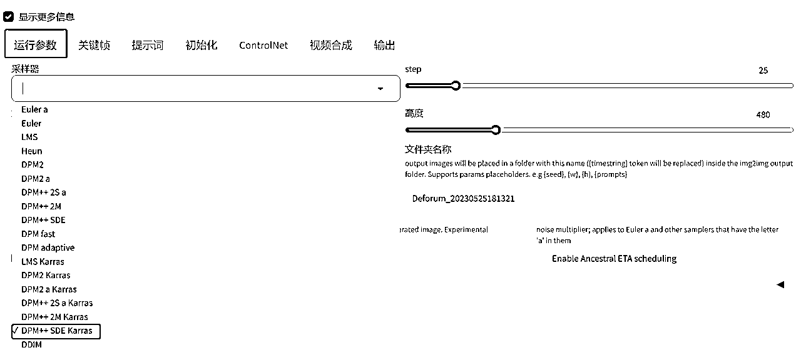
电脑配置稍微低一点的就设置在20~25
电脑配置比较好的就可以设置在25~30之间
但是不要超过30步，不然出视频会很慢
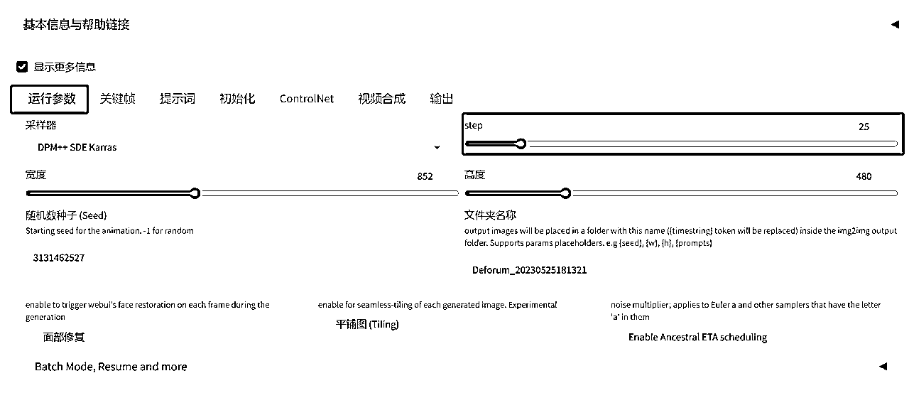
这个宽度和高度是用来调整视频大小的
宽度512*高度512出来的就是正方形的视频
9：16的竖屏视频可以设置成 宽度576*高度1024
16：9的横屏视频可以设置成 宽度1024*高度576
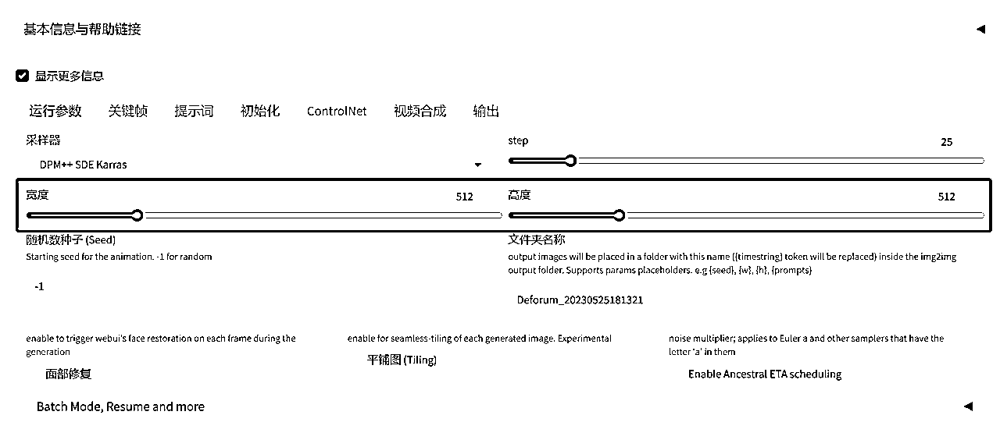
大家可以看到deforum里面可以设置的参数很多
而且每一次重新打开SD都要重新去设置，非常麻烦
所以大家可以在第一次设置完参数之后，把它保存成预设
之后每一次要应用的时候就可以直接使用预设了
设置完参数之后，点击右下角的“储存设置”
然后点击上面的文件夹图标
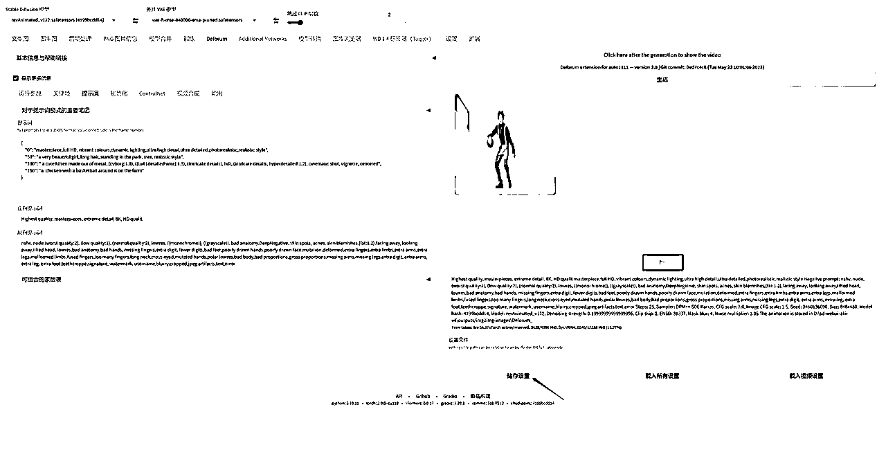
在弹出的文件夹窗口就可以看到我们保存的预设
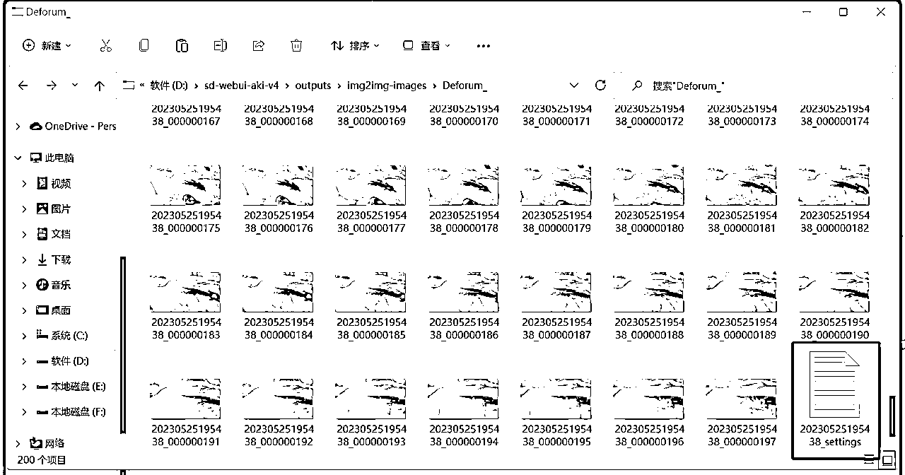
等到下一次需要用这个预设的时候
找到这个文件夹，鼠标右键点击文件，然后复制文件地址
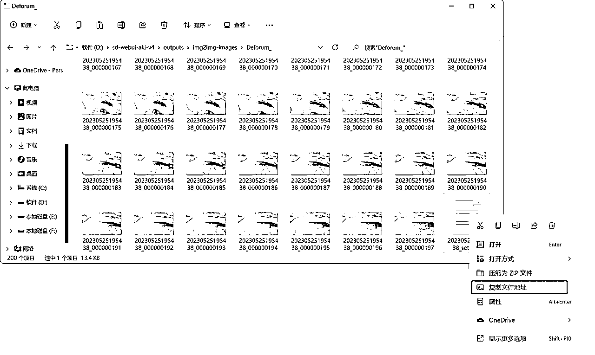
然后把地址粘贴到右下角的文本框
点击“载入所有设置”
这样我们的参数就会自动填充上去啦！
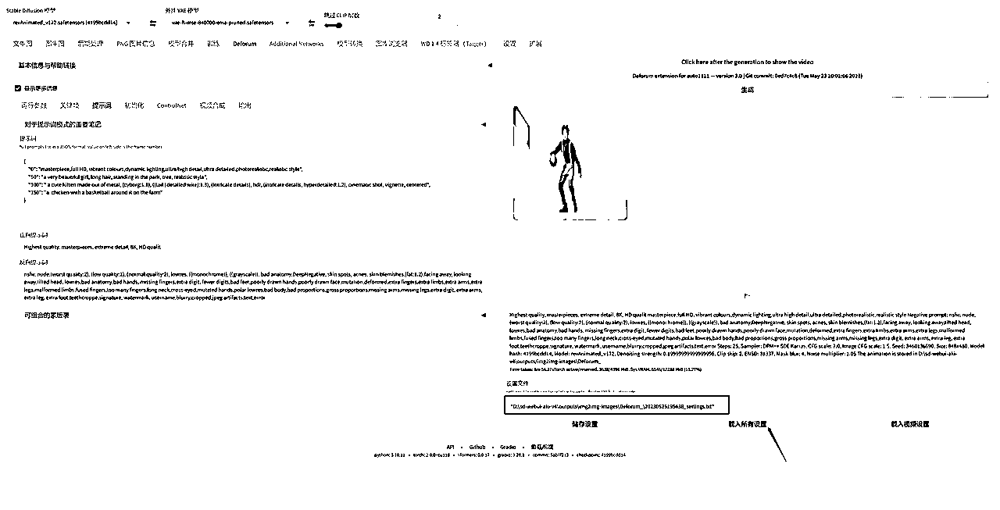
好了，以上就是我们这篇文章的全部内容
如果你对AI感兴趣的话，可以关注我的公众号：吴东子AI，也欢迎分享给你身边想学AI技术的朋友
里面有我之前发过的所有文章，之后也会持续给大家更新实用的AI干货教程
我是吴东子，用奶奶都能听懂的方式，分享可以落地实操的干货，我们下篇文章再见！
模型、预设点击链接获取
链接：https://pan.baidu.com/s/1ltBtZ1c6evzdZM5ZOtl9rQ?pwd=lkhc
提取码：lkhc